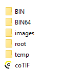

Nach der Installation der EWL sollte folgende Verzeichnisstruktur vorhanden sein:

Ø EWL-Verzeichnis
Enthält die div. "exe-Dateien" (mesoserver.exe, mesosyserver.exe, usw.), die Datei "server.config (Parameterdatei), diverse XML-, oder DLL-Dateien.
Ø root-Verzeichnis
Ist jenes Verzeichnis das vom Browser (EWL-Client) angesurft wird (z.B. über Port 80).
Ø images-Verzeichnis
Temporäres Benutzerverzeichnis in dem Grafiken wie z.B. Balkengrafik aus einer Druckvorschau abgelegt werden. Dieses Verzeichnis muss immer unterhalb des Verzeichnisses "root" vorhanden sein.
Ø temp-Verzeichnis
Pro angemeldeten Benutzer wird ein eigenes Verzeichnis angelegt in das z.B. PDF's abgelegt werden. Beendet der Benutzer die EWL, so wird "sein" temp-Verzeichnis wieder geleert. Wo sich dieses Verzeichnis befindet kann über die Einstellung in der "server.config" gesteuert werden.